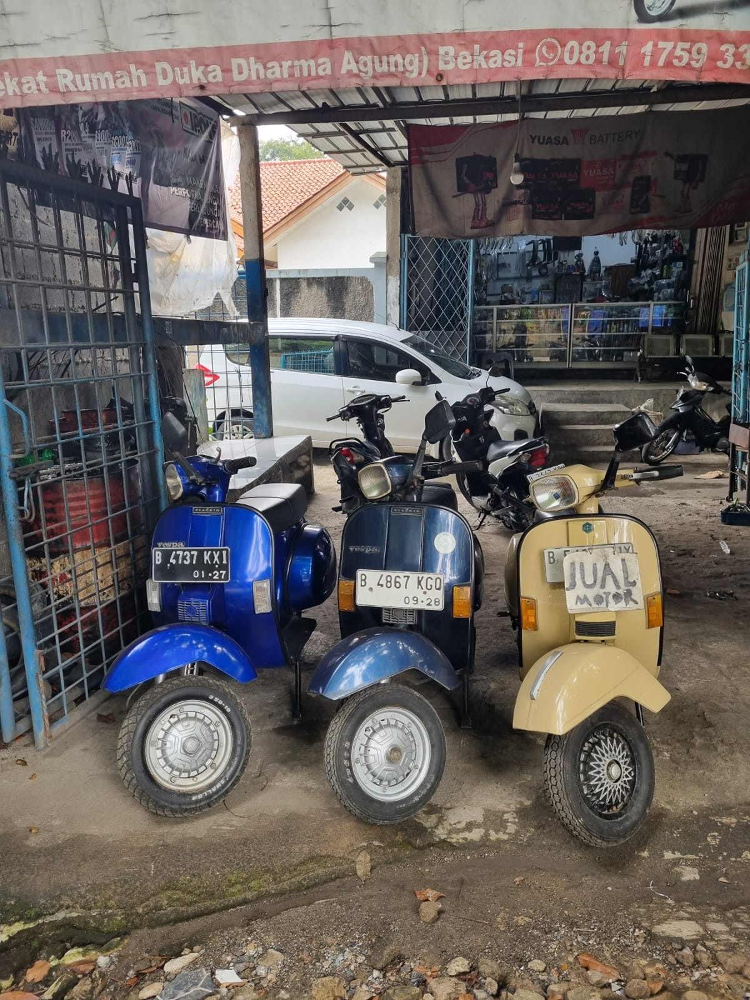

Bekasi/16/06/24- Harga Vespa tua kini melambung tinggi di pasaran, menarik perhatian pecinta skuter antik di seluruh negeri. Tren ini terlihat jelas di sebuah bengkel yang beralamat di Jalan Perjuangan, Bengkel Vespa tua tersebut kini semakin ramai dengan aktivitas jual-beli dan restorasi. Lonjakan Harga yang Signifikan Vespa tua, khususnya model-model klasik dari tahun 1960-an dan 1970-an, kini dibanderol dengan harga yang bisa mencapai puluhan hingga ratusan juta rupiah.
Peningkatan harga ini dipicu oleh meningkatnya minat kolektor dan penghobi skuter klasik yang mencari keunikan dan nilai sejarah dari Vespa. Menurut Samono, seorang kolektor Vespa tua yang telah berkecimpung dalam dunia skuter antik selama lebih dari 30 tahun, "Harga Vespa tua memang naik drastis beberapa tahun terakhir.
Banyak orang yang tertarik karena nilai sejarah dan estetikanya yang klasik."
Wawancara Eksklusif di bengkel vespa Naga Kami berbincang dengan salah satu pengguna Vespa di bengkel Naga untuk mendapatkan perspektif langsung tentang fenomena ini.

Menurut Heru (35 tahun) Pengguna vespa. "Vespa tua itu punya nilai seni yang tinggi. Setiap bagiannya punya cerita, dan restorasinya bisa sangat memuaskan. Saya baru saja menjual Vespa Super 1972 dengan harga 70 juta rupiah. Padahal, lima tahun lalu harganya mungkin hanya setengahnya."
Fenomena kenaikan harga Vespa tua menunjukkan bahwa minat terhadap skuter antik semakin tinggi. Nilai sejarah, keunikan desain, dan kepuasan dari proses restorasi membuat Vespa tua menjadi barang yang sangat diminati. Bagi para penghobi dan kolektor, memiliki Vespa tua bukan hanya soal transportasi, tetapi juga apresiasi terhadap seni dan sejarah otomotif.
Ada beberapa jenis vespa yang diminati para kolektor di karenakan kelangkaan vespa tersebut yang hanya di produksi terbatas.
Harga Vespa tua saat ini sudah tidak bisa dinalar, untuk satu unitnya kini harganya bisa mencapai ratusan juta rupiah, itu adalah harga yang cukup tinggi untuk satu unit sepeda motor tua.
Namun, jika mengingat vespa tua merupakan motor antik, maka harga segitu masih bisa diterima. Selain itu, ada beberapa jenis vespa tua yang sangat diburu para penghobi vespa tua, maka ratusan juta rupiah masih bisa di terima oleh para penyuka vespa tua.